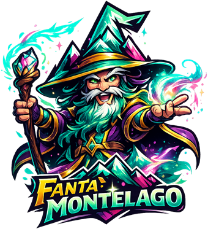

Come si gioca
In due parole
È il fantacalcio del Montelago Celtic Festival. Il tuo gruppo crea un accampamento privato, ci mette dentro le persone che lo compongono, e per tutto il festival ognuno accumula punti in base a quello che combina: dorme in tenda, finisce nella cloaca, rimedia un numero, abbandona la serata alle nove.
Un arbitro tiene il banco e assegna i punti. Tutti gli altri possono segnalare quello che vedono, con tanto di foto-prova, e l'arbitro decide se vale. Alla fine c'è una classifica, e un diario che racconta il festival giornata per giornata.
Se ti hanno invitato
Non serve nessuna password. Ricevi una mail con dentro un link: aprilo dallo stesso telefono e sei dentro.
Chi ti ha invitato ti dà un codice di 6 lettere. Lo scrivi, metti il tuo nome, ed entri nel gruppo giusto.
Vedi chi sta vincendo e cosa ha combinato. Quando becchi qualcuno in flagrante, vai su Segna, scegli chi e cosa, allega una foto e invia: la tua segnalazione va all'arbitro, che decide.
Se l'arbitro sei tu
Gli dai un nome e diventi automaticamente l'arbitro. Ricevi un codice di 6 lettere: quello è la chiave del tuo gruppo.
Dalla scheda Gestione, una per una. Non serve che abbiano l'app: puoi mettere in classifica anche chi non la userà mai.
Trovi già pronte le regole ufficiali della Compagnia. Puoi cambiare i punteggi, disattivarne, aggiungere le vostre, e in qualsiasi momento rimettere tutto com'era.
Il pulsante Condividi prepara il messaggio già scritto da mandare sul gruppo.
Quello che segni tu vale subito. Le segnalazioni degli altri si accumulano nella scheda Proposte: le guardi con la foto allegata e decidi.
Facoltativo, ma cambia tutto. Una riga tipo «aperitivo per i primi due, pagato dagli ultimi due» compare in cima alla classifica.
Le cinque schede
Podio e punteggi. Tocca un nome per vedere tutto quello che ha collezionato.
Registri un bonus o un malus: chi, cosa, quando, la foto e volendo il link a un video.
La cronaca del festival giorno per giorno, con tutte le foto-prova.
Le segnalazioni in attesa. L'arbitro approva o rifiuta; gli altri seguono le proprie.
Codice invito, persone, regole, premio. Per chi non arbitra si chiama Info e contiene i contatti.
Domande
Funziona senza campo?
No, purtroppo serve la connessione, e a Montelago spesso non prende. Non è un dramma: l'app resta attiva fino a fine agosto, quindi potete segnare quando vi torna la linea o anche una volta tornati a casa, ricostruendo le gesta a mente fredda.
Non mi arriva la mail con il link
Guarda nello spam. Se non c'è, aspetta qualche minuto e riprova una volta sola: ritentare in fretta peggiora le cose. Se proprio non arriva, dillo a chi ti ha invitato.
Chi vede le nostre foto e i nostri punteggi?
Solo chi ha il codice del vostro accampamento. Gli altri gruppi non vedono niente di vostro, e viceversa: la separazione è imposta dal database, non solo nascosta nell'app. Chi si registra senza avere un codice trova una schermata vuota.
Posso mettere un video?
Non caricarlo direttamente, ma puoi incollare il link a un video su YouTube, Google Foto o Drive: nell'app si vede insieme all'evento. Le foto invece si caricano normalmente.
Quanto costa?
Niente. È gratis, fatta per passione nel tempo libero. Proprio per questo può capitare che qualcosa non funzioni: portate pazienza e segnalatecelo.
Possiamo usarla anche noi, che non siamo della Compagnia?
Certo. Create il vostro accampamento, tenetevi il vostro codice e siete un mondo a parte. Le regole di partenza sono quelle della Compagnia, ma potete riscriverle tutte.
Creata da MadStoryteller11
per La Compagnia di Sotto Monte
Scrivici: compagniasottomonte@gmail.com